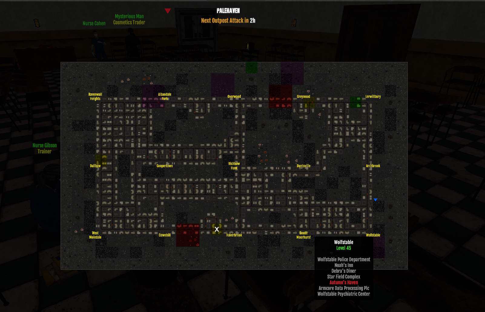
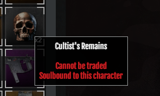
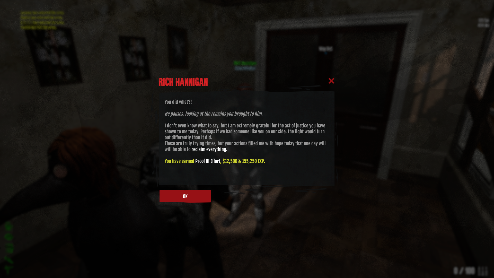
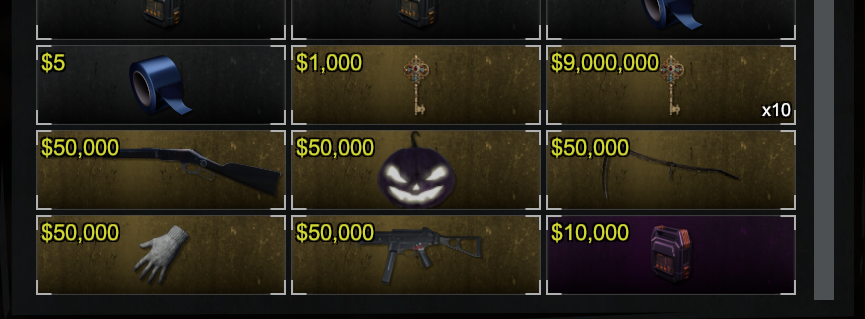

Hello my dear friend!
I want to tell you how to get “proof of effort” and get an event item on September 17
First, you need to find a building on the map called "Autumn Haven's" (50 lvl location)

Next, find yourself a group, or if you are sure that you can kill the boss, go to this building and kill 3 cultist bosses, they are in the same location every day:
1. LDD-LAST-LSD (left double door - last - left double door)
2. 2F RDD-SDA (second floor right double door - solo door across/ahead)
3. 4F RDD-2LSD (fourth floor right double door - second left solo door)
After killing them, you will receive 3 cultist remains, which you must hand over to the NPC named "Rich Hannigan" inside Greywood Star Hotel.


Congratulations! You have to do this 10 more times and you can get one of the following items: (Reaper Scythe, Fatman's Enforcer, Fright Mask, Fatman's All-Purpose Mittens, Flowing Rabbit)
